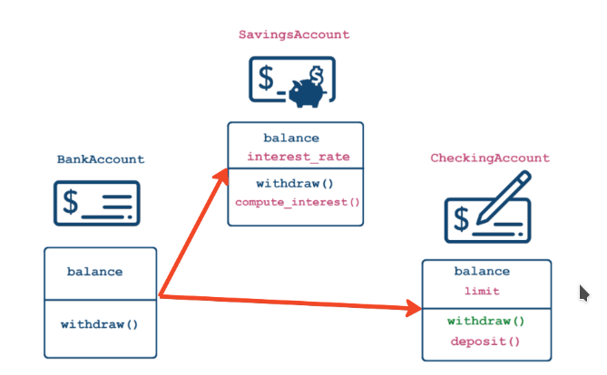

Object Oriented Programming In Python
Objects: Object = data + functionality
Example:
- Customer:
-
data:
- email = xyz@gmail.com
- phone = xxx-xxx-xxxx
-
functionality
- place order
- order Functionality
- cancel order
- place order
-
In Python, Everything is an Object
Classes as blueprints
- Class: blueprint for objects outlining possible states and behaviors
- State = an object's data: this is the attributes Example: df.shape
- Behavior = an object's functionality: this is the methods Example: df.head(10)
# Display attributes and methods:
print(dir([1, 2, 3, 5]))
Class Anatomy:
class <name>:
def <function_name>(self, variables...):
pass
def identity(self, name):
self.name = name
print(f"Customer name is {name}")
c_one = Customer()
c_two = Customer()
- WHAT IS self?
- Classes are templates
- self should be the first argument of any method
- self is a stand-in for the (not yet created) object:
# continuing from above anatomy c_one.identity("alex") # outputs: Customer name is alex # the code is same as Customer.identity(c_one, "alex") # same output print(c_one.name) # outputs: alex
init constructor Class Anatomy:
class <name>:
"""Docstrings"""
def __init__(self, variables..., variableX = 0): # supports default value too
self.name = variables[0]
...
def <methodName>(self, ...):
pass
Constructor
- Add Data to Object when creating it
- init() method is called everytime object is created.
- Constructor is called automatically because of methodname syntax.
<name>.__doc__ # outputs the docstring of the object
Classes vs. instance attributes
Core Principles of OOP
- Encapsulation: Bundling of data and methods
- Inheritance: Extending existing class
- Polymorphism: Creating Unified Interface
Class-level attributes:
- Data shared among all instance of a class
- "Global variables" within the class
class <name>:
# Class Attribue
<variable> = <variable value>
Min = 300000
Note: to access the class attribute, use -> ClassName.AttrName
Class methods:
class Employee:
def __init__(self, name, salary):
self.name = name
self.salary = salary
# use decorator to declare class method
@classmethod
# cls argument refers to the class
def from_file(cls, filename):
# DO stuff here
# Can't use any instance attributes
with open(filename, "r") as file:
name = file.readline().strip() # Read the first line
salary = file.readline().strip() # read second line
return cls(name, int(salary)) # cls(...) will call __init__(...)
# Call the class, not the object
emp = MyClass.from_file("xyz.txt")
print(emp.name)
- Possible to define class methods
- Must have a narrow scope because they can't use object-level data
Method is a function that is specific to the class.
This decorator allows us to modify the behavior of the method defined directly afterwards.
- Allow alternate constructors
- can only have one init()
- use class methods to create objects
When to use:
- Alternate constructors
- Methods that don't require instance-level attributes
- Restricting to a single instance (object) of a class: Singleton -> init
- Database connections
- Configuration Settings
Class Inheritance:
Code reuse 
- Someone has already done it
- OOP is great for customizing functionality by combining with other packages
class BankAccount:
def __init__(self, balance):
self.balance = balance
def withdraw(self, amount):
self.balance -= amount
class SavingsAccount(BankAccount):
def __init__(self, balance, interest_rate):
BankAccount.__init__(self, balance)
self.interest_rate = interest_rate
def deposit(self, amount):
self.balance += amount
def withdraw(self, amount, fee = 0):
if (amount <= self.limit):
BankAccount.withdraw(self, amount + fee)
# Inheritance "is-a" relationship
print(isinstance(SavingsAccount, BankAccount)) # TRUE but inverse is false
You can run the constructor of parent class first by Parent.init(self, args...)
Operator Overloading: comparing objects
The eq() method
- eq() is called when 2 objects of class are compared using ==
- Accepts 2 arguments: self and other-objects to compare
- Return Boolean
class Customer:
def __init__(self, acc_id, name):
self.acc_id, self.name = acc_id, name
def __eq__(self, other):
print("__eq__() is called")
# return True if all attributes match
return (self.acc_id == other.acc_id) and (self.name == other.name) and (type(self) == type(other))
customer1 = Customer(123, "Alex")
customer1 = Customer(123, "Alex")
customer1 == customer2
# prints:
# __eq() is called
# True
Other Comparison Operators:
- == : __eq__()
- != : __ne__()
- >= : __ge__()
- <= : __le__()
- > : __gt__()
- < : __lt__()
PYTHON will always call the comparison operators for the child class
String representation and Inheritance comparison
str():
- print(obj), str(obj)
- informal, for end user
- string representation repr()
- repr(obj), printing in console
- formal, for developer
- reproducible representation
- fallback for print()
print(np.array([1,2,3]))
# Output: [1 2 3]
str(np.array([1, 2, 3]))
# Output: '[1 2 3]'
repr(np.array([1, 2, 3]))
# Output: 'array([1, 2, 3]'
class Customer:
def __init__(self, name, balance):
self.name = name
self.balance = balance
def __repr__(self):
return f"Customer('{self.name}', {self.balance})"
Exceptions:
- Prevent the program from terminating when exception is raised.
- try except finally(optional)
- raising errors: raise ValueError("...")
In python exceptions are classes that are inherited from BaseException Or Exception
BaseException
+-- Exception
+-- ArithmeticError
| +-- FloatingPointError
| +-- OverflowError
| +-- ZeroDivisionError
+-- TypeError
+-- ValueError
| +-- UnicodeError
| +-- UnicodeDecodeError
| +-- UnicodeEncodeError
| +-- UnicodeTranslateError
+-- RuntimeError
...
+-- SystemExit
...
Custome Exceptions:
class BalanceError(Exception):
pass
class Customer:
def __init__(self, name, balance):
if balance < 0:
raise BalanceError("Balance has to be non-negative!")
else:
self.name = name
self.balance = balance